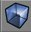
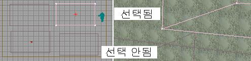
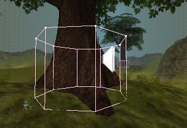

UDN
Search public documentation:
VolumesTutorialKR
English Translation
日本語訳
Interested in the Unreal Engine?
Visit the Unreal Technology site.
Looking for jobs and company info?
Check out the Epic games site.
Questions about support via UDN?
Contact the UDN Staff
日本語訳
Interested in the Unreal Engine?
Visit the Unreal Technology site.
Looking for jobs and company info?
Check out the Epic games site.
Questions about support via UDN?
Contact the UDN Staff
볼륨
문서 요약: 다양한 타입의 볼륨 설정 및 사용에 대한 참조. 문서 변경 내역: 최종 업데이트 Michiel Hendriks – 약간의 v3323 업데이트. 이전 업데이트 Tom Lin (DemiurgeStudios?) – 문서를 좀 더 관리하기 쉽도록 분리함. 원저자 Lode Vandevenne (UdnStaff).볼륨
볼륨이란 액터나 플레이어가 언제 그 안에 들어오고 나가는지 “아는” 보이지 않는 브러쉬입니다. 여러분이 볼륨 내에 있을 때는, 특별한 속성이 설정됩니다 (물 종류의 마찰, 또는 통증을 일으키는 부분 등). 볼륨에는 여러가지 독특한 타입이 있으며, 이 가운데 중요한 것들은 별도의 문서에서 설명되거나, 좀 더 적합한 곳에서 다루어지고 있습니다. 이러한 볼륨들에 대한 자세한 정보는 For PhysicsVolumesKR 및 LevelOptimization? 문서를 참고하십시오. 이 문서에서는 거의 대부분의 볼륨에서 공통적인, 보다 일반적인 속성에 대해 설명합니다볼륨의 추가
볼륨을 추가하기 위해서는 먼저 빨강색 브러쉬에 원하는 형태와 위치를 부여한 다음, 왼쪽 툴바의 Volume 버튼을
누릅니다. 그러면 추가하고자 하는 볼륨을 선택할 수 있는 목록이 나타납니다. Volume 과 PhysicsVolume 은 모체 클래스들이며, 나머지는 PhysicsVolume 의 하위 클래스들입니다. 이 가운데 일부는 스크립트에 추가된 부가 기능들을 가지고 있으며, 다른 것들은 단지 속성들이 변경된 PhysicsVolume 들입니다. 이러한 유형의 물리 볼륨에 대해 좀 더 알고 싶으면 PhysicsVolumesKR 문서를 참고하십시오. 에디터에 볼륨을 추가하고 브러쉬를 치우면, 이 볼륨은 분홍색 브러쉬 (선택된 것) 또는 보라색 브러쉬 (선택되지 않은 것)처럼 보입니다.
에디터에 볼륨을 추가하고 브러쉬를 치우면, 이 볼륨은 분홍색 브러쉬 (선택된 것) 또는 보라색 브러쉬 (선택되지 않은 것)처럼 보입니다.

볼륨을 추가한 다음에는 이것을 회전하거나, 크기 변경 및 재배치를 마음대로 할 수 있습니다. 볼륨들은 게임을 플레이할 때는 보이지 않으므로, 테스트할 때는 볼륨의 위치를 가시적인 도형으로 표시해두는 것을 고려해 보십시오.Volume
이것은 PhysicsVolume 의 모체 클래스입니다. 원칙적으로, 이 클래스가 유일하게 사용되는 것은 location 이 PhysicsVolume 의 속성을 필요로 하지 않을 경우 이것에 LocationName 을 주기 위해서입니다.AssociatedActorTag
어느 특정 액터의 태그에 이것을 설정하면, 이 볼륨이 건드려졌을 때 그 액터에서 "Touch" 및 "UnTouch" 이벤트가 호출됩니다. 이것은 프로그래머들이 가장 고민하는 것입니다.DecoList
볼륨이 DecorationList 액터에 대한 경계를 정의하기 위해 사용하는 것입니다. Unreal 편집의 기본을 아는 분들에게는 매우 간단한 것입니다 . 우선 Actor 목록에서 Actor > Keypoint > DecorationList 로 갑니다. 그리고 레벨에 Decoraration List 를 추가합니다. DecorationList? 의 속성들은 설명이 필요 없이 명백합니다.
DecorationList? 의 속성들은 설명이 필요 없이 명백합니다.

- bAlign: 정적 메쉬들을 그 아래에 있는 바닥에 정렬합니다. 따라서 바닥이 기울어져 있으면 장식 메쉬들도 그에 따라 기울어집니다.
- bRandomPitch: 무작위 Pitch (앞뒤로 흔들기)에 대한 true/false 토글입니다.
- bRandomRoll: 무작위 Roll (굴리기)에 대한 true/false 토글입니다.
- bRandomYaw: 무작위 Yawl (좌우로 흔들기)에 대한 true/false 토글입니다.
- Count: Min 및 Max 값은 볼륨 내 정적 메쉬 장식의 수를 결정합니다.
- DrawScale: Min 및 Max 값은 정적 메쉬 장식의 크기를 결정합니다.
- StaticMesh: 장식 메쉬에 사용할 메쉬를 선택합니다.
 이제 볼륨의 속성에서 DecoList 행을 선택하십시오. 이 필드를 채우려면 `Use' 버튼을 사용하지 말고 `Find' 버튼을 사용해야 합니다. Find 버튼을 클릭한 다음 DecorationList 아이콘을 클릭하십시오. 그리고 재빌드하십시오. 모든 것이 정확하게 되었다면, 레벨을 로드했을 때 볼륨이 메쉬들로 채워져 있는 것을 보게 됩니다.
이제 볼륨의 속성에서 DecoList 행을 선택하십시오. 이 필드를 채우려면 `Use' 버튼을 사용하지 말고 `Find' 버튼을 사용해야 합니다. Find 버튼을 클릭한 다음 DecorationList 아이콘을 클릭하십시오. 그리고 재빌드하십시오. 모든 것이 정확하게 되었다면, 레벨을 로드했을 때 볼륨이 메쉬들로 채워져 있는 것을 보게 됩니다.
 채워진 볼륨이, 볼륨이 평면이 아님에도 불구하고, 메쉬들을 모두 평면에 생성하는 것을 눈여겨 보십시오. 메쉬는 볼륨의 수직 중심에서 스폰합니다.
채워진 볼륨이, 볼륨이 평면이 아님에도 불구하고, 메쉬들을 모두 평면에 생성하는 것을 눈여겨 보십시오. 메쉬는 볼륨의 수직 중심에서 스폰합니다.
LocationName
모든 볼륨에 LocationName을 부여할 수 있습니다. Volume Properties --> Volume --> LocationName 에 이름을 입력하십시오. 이 LocationName 을, 예를 들자면 플레이어가 볼륨 내에 있는 동안 그가 자기 팀에게 메시지를 보낼 경우 이 LocationName 이 그의 이름 바로 옆에 나타나도록 해서, 다른 플레이어들이 그가 어디 있는지 알 수 있도록 하는데 사용할 수 있습니다. 맵의 한 지역이 이름을 갖게 하고 싶지만, 그 지역에 어떤 물리 속성도 필요하지 않다면 일반 Volume 클래스를 사용해야 합니다.
이 LocationName 을, 예를 들자면 플레이어가 볼륨 내에 있는 동안 그가 자기 팀에게 메시지를 보낼 경우 이 LocationName 이 그의 이름 바로 옆에 나타나도록 해서, 다른 플레이어들이 그가 어디 있는지 알 수 있도록 하는데 사용할 수 있습니다. 맵의 한 지역이 이름을 갖게 하고 싶지만, 그 지역에 어떤 물리 속성도 필요하지 않다면 일반 Volume 클래스를 사용해야 합니다.
LocationPriority
한 액터가 하나 이상의 볼륨에 들어 있을 경우, 그 액터의 볼륨은 가장 우선권을 가지는 볼륨으로 설정됩니다. 이 변수를 취급할 때는 몇가지 유념해야 할 점들이 있습니다. 첫째, 이 변수의 수치가 높을수록 높은 우선권을 가집니다 – 따라서 LocationPriority 가 3 인 것이 1 인 것보다 우선권이 높습니다. 둘째, 이것은 해당 액터가 들어있는 것으로 간주되는 볼륨에만 영향을 줍니다; 플레이어가 들어있는 어떠한 볼륨의 효과에도 영향을 미치지 않습니다. 예: 하나가 다른 것의 안에 들어있는 두 개의 용암 볼륨이 있다고 가정합니다. 플레이어가 안쪽의 용암 볼륨 내에 있을 경우 양 볼륨으로부터의 손상은 플레이어에게 영향을 줍니다. 그러나 코드에서는 플레이어가 `LavaExterior' 가 아니라 `LavaInterior' 에 있는 것으로 간주됩니다.BlockingVolume
BlockingVolume (차단 볼륨)은 다른 것을 가로막는, 보이지 않는 브러쉬입니다. blocking volume 은 플레이어 및 다른 액터들을 가로막지만 제로 범위 추적 (발사체, 로켓 등)의 통과는 허용합니다. 플레이어가 이 보이지 않는 계단을 걸어 올라갈 수 있지만, 이것을 사격할 수 있습니다 : BlockingVolume 은 Static Mesh (정적 메쉬)보다 빠르고 더 나은 충돌을 제공합니다: 이는 맵에 BSP 를 추가하지만, 레벨에서 어떤 BSP 도 떼어내지 않으며, 또 렌더되지 않으므로 BSP 홀을 만들어내지 않습니다.
Static Mesh 주위에 BlockingVolume 을 사용하려면 그 주위에 BlockingVolume 을 추가하기만 하면 됩니다. 그리고나서 Static Mesh 속성의 Collision 에서 bBlockNonZeroExtendTraces 를 False 로 설정합니다: 이제 Static Mesh 는 총알을 가로막지만, 플레이어는 지나가도록 합니다. 그 대신 플레이어는 이제 BlockingVolume 에 의해 차단됩니다.
BlockingVolume 은 Static Mesh (정적 메쉬)보다 빠르고 더 나은 충돌을 제공합니다: 이는 맵에 BSP 를 추가하지만, 레벨에서 어떤 BSP 도 떼어내지 않으며, 또 렌더되지 않으므로 BSP 홀을 만들어내지 않습니다.
Static Mesh 주위에 BlockingVolume 을 사용하려면 그 주위에 BlockingVolume 을 추가하기만 하면 됩니다. 그리고나서 Static Mesh 속성의 Collision 에서 bBlockNonZeroExtendTraces 를 False 로 설정합니다: 이제 Static Mesh 는 총알을 가로막지만, 플레이어는 지나가도록 합니다. 그 대신 플레이어는 이제 BlockingVolume 에 의해 차단됩니다.

bClampFluid
이것이 true 로 설정된 경우에는 차단 볼륨이 정적 메쉬의 단순 충돌 모델처럼 유동체 표면에 대한 충돌 모델로서 사용됩니다.bClassBlocker
이것이 true 로 설정된 경우, 차단 볼륨은 (BlockedClasses 에서 정의된) 특정 클래스들만 차단합니다. 이 목록의 클래스들이 차단되는 한편 다른 것들은 차단되지 않습니다 (v3323 및 그 이후).BlockedClasses
(bClassBlocker 이 설정되었을 때) 이 볼륨이 차단하게 될 클래스 목록입니다. 이 클래스들(및 하위 클래스들)만이 차단됩니다 (v3323 및 그 이후).